Part 0 · Camera Calibration and 3D Scanning
We calibrate the camera and visualize all training views in viser as frustums to verify
intrinsic/extrinsic parameters and scene coverage.
Camera Frustums in Viser
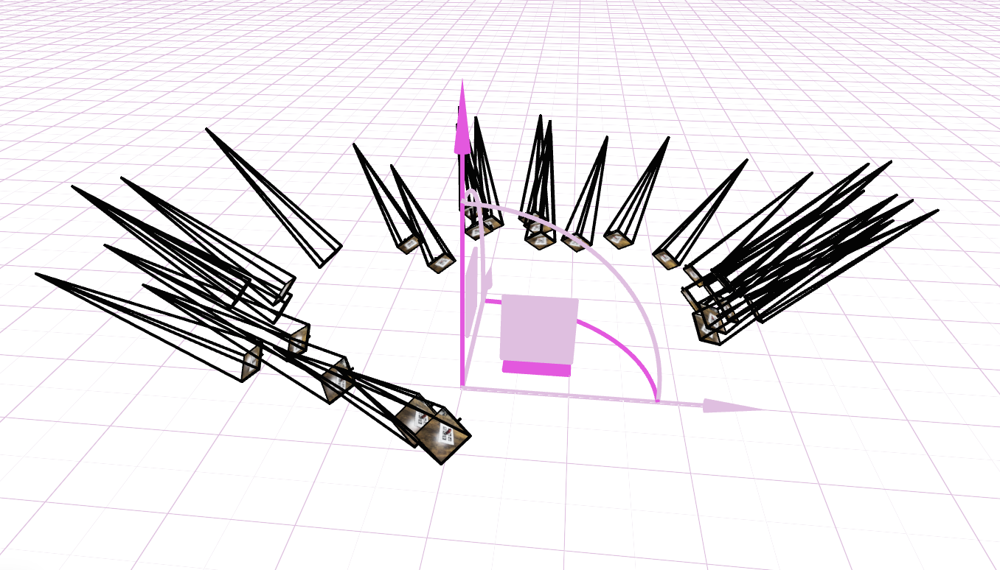
Part 1 · Fit a Neural Field to a 2D Image
Fit an MLP-based coordinate network to reconstruct 2D images from continuous pixel coordinates using positional encoding.
Model Architecture
Training Progression · Provided Test Image

PSNR: -- dB

PSNR: -- dB
Drag the slider to see pictures in different training steps.
Positional Encoding & Width
Comparison across two max positional encoding frequencies and two network widths.
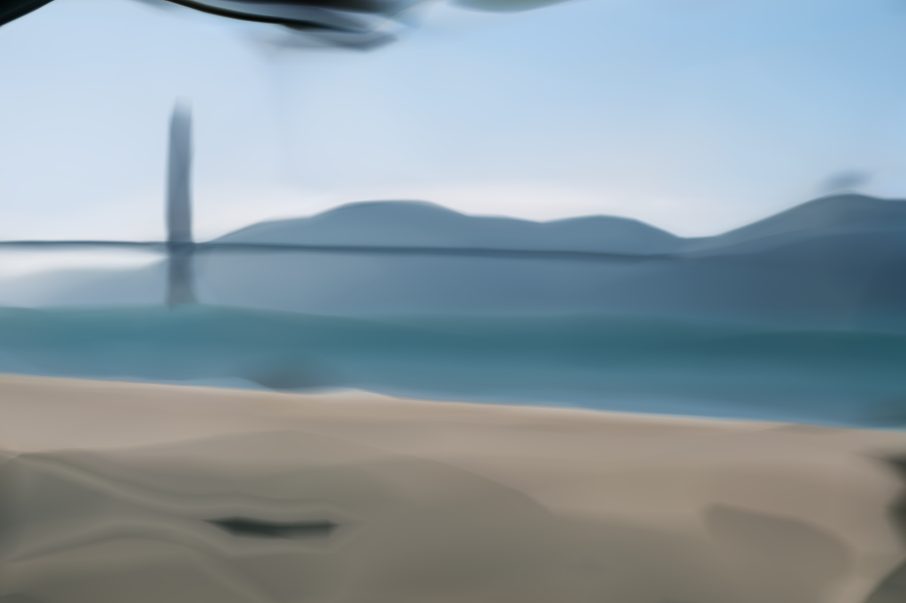
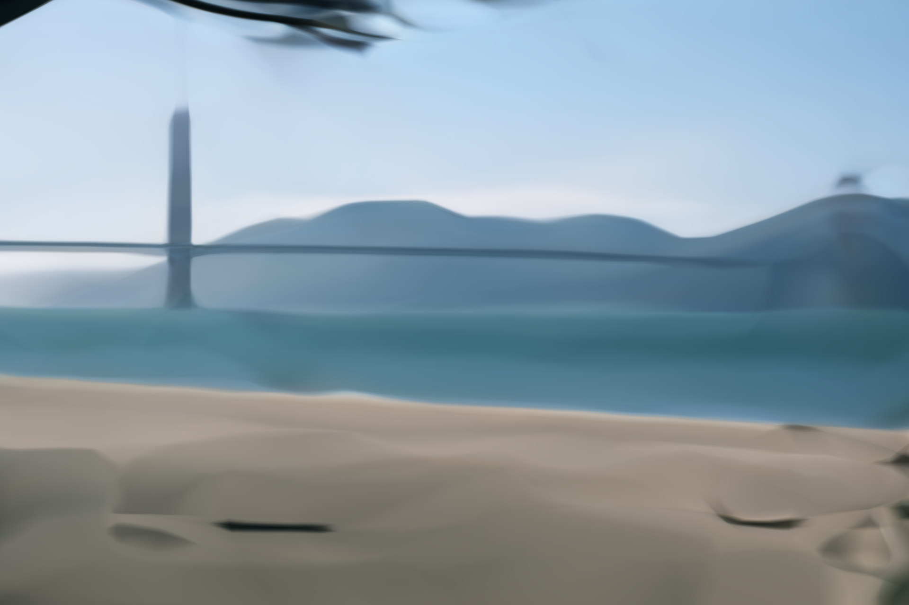
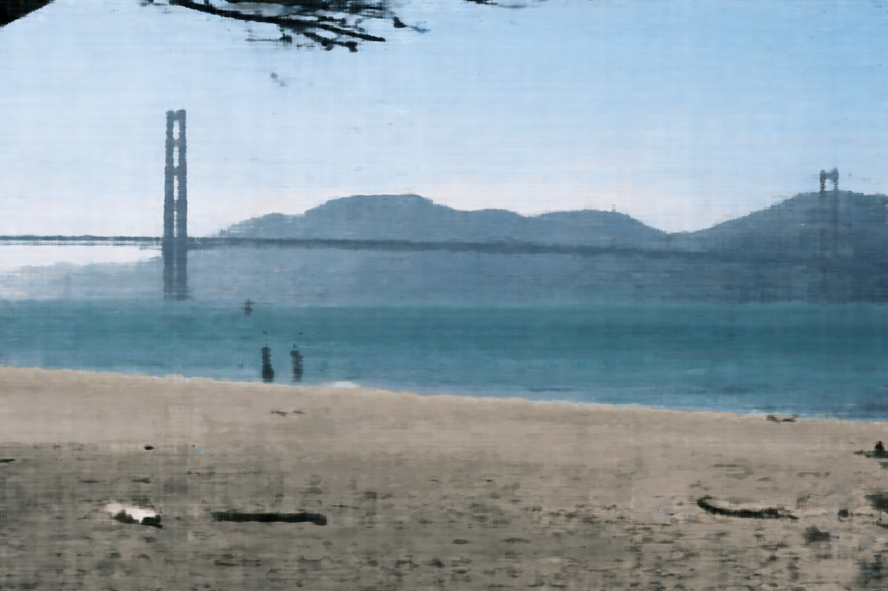
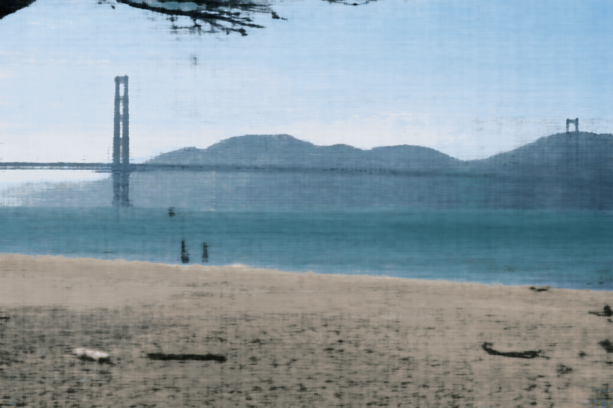
PSNR Curve
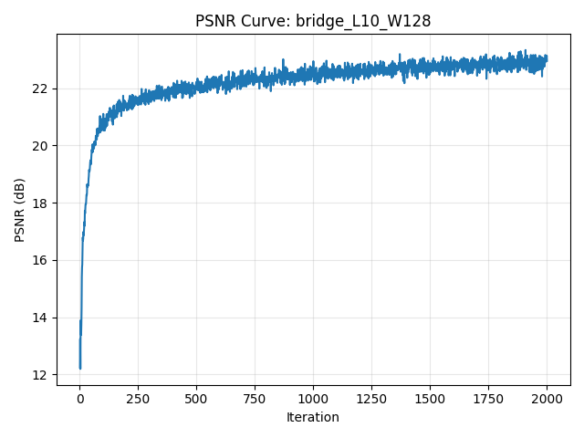
Part 2 · Fit a Neural Radiance Field from Multi-view Images (Lego)
Implement a NeRF-style volumetric renderer for the Lego scene, including ray sampling, MLP-based density/color prediction, and hierarchical rendering from calibrated multi-view images.
Implementation Overview
-
Compute rays from the cameras
I generate pixel-aligned rays using my ownget_rays()function. It first maps pixel coordinates into camera space viapixel_to_camera(), then transforms them into world coordinates using the camera-to-world matrix. Each ray consists of:ray_o– the camera center extracted fromc2wray_d– a normalized direction pointing through the pixel
-
Sample points along each ray
I implement stratified sampling insample_along_rays(). For each ray, I drawN_samplesdepth values betweennearandfar. With perturbation enabled, samples are jittered within each interval to encourage anti-aliasing and reduce bias. The output is:pts– 3D sample points in world coordinatesdeltas– interval lengths used for volumetric integration
-
Predict color and density using an MLP
Each sample point is fed into my customNeRFMLP. The network processes:- the 3D position of each point (with positional encoding)
- the viewing direction for directional appearance effects
σ– volume density at each pointrgb– view-dependent color prediction
-
Combine samples into the final pixel color
I implement volumetric rendering involume_render(), following NeRF’s equation:- compute transmittance along the ray
- accumulate colors weighted by opacity
- produce a single RGB for each pixel
Rays & Samples Visualization
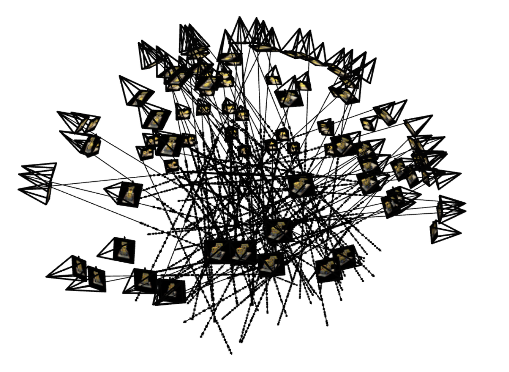
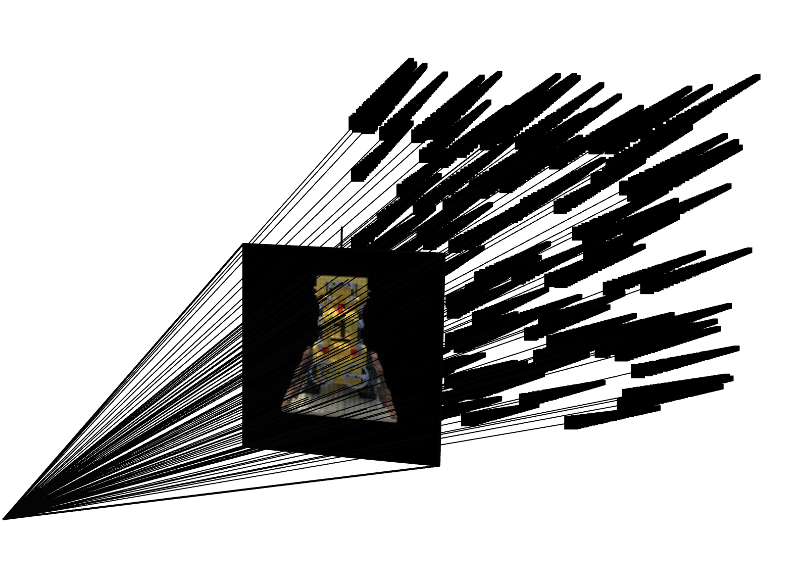
Training Progression (Lego)
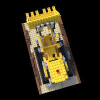
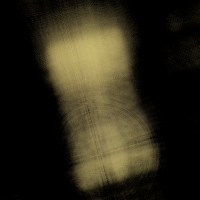
Train PSNR: -- dB · Val PSNR: -- dB · Loss: --
Drag the slider to browse NeRF predictions at different iterations.
Validation PSNR Curve
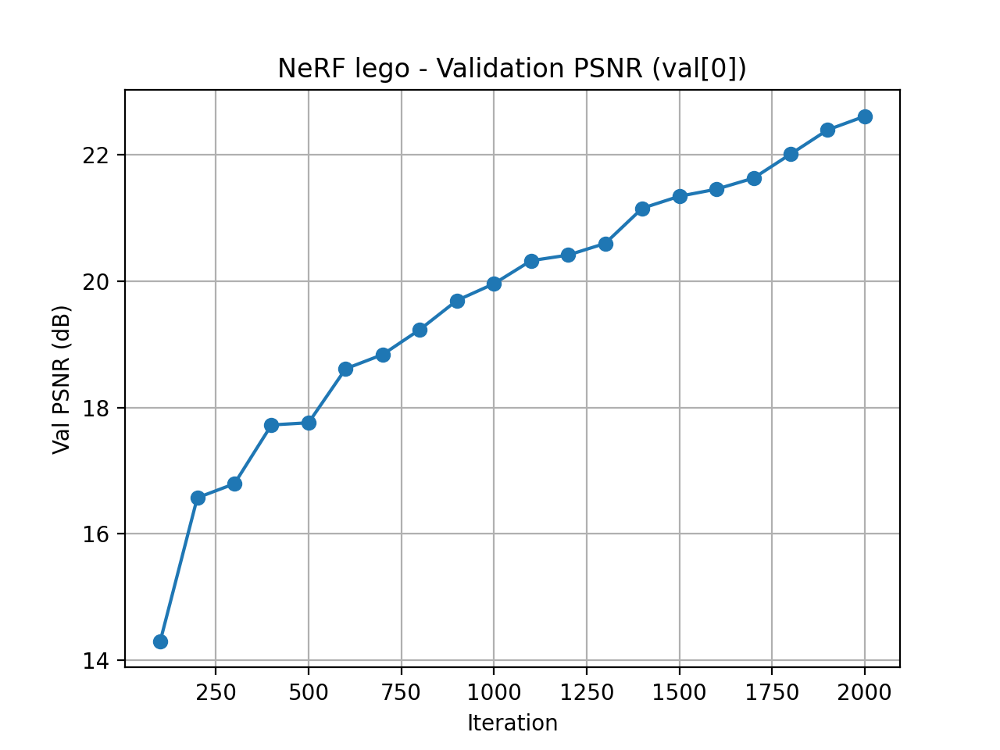
Spherical Rendering Video
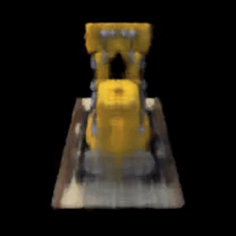
Part 2.6 · Training NeRF with My Own Data
Novel View GIF
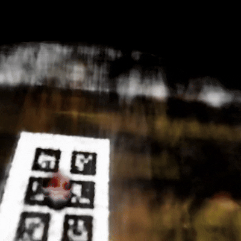
Code & Hyperparameter Adjustments
Hyperparameter Tuning
I experimented with several key NeRF hyperparameters to make the custom scene both stable and efficient to train. First, I tightened the depth range to near = 0.001 and far = 0.5, which better matches the small physical scale of my capture and avoids wasting samples on empty space. I then swept the number of points sampled along each ray (n_samples) over 32, 64, and 128. With 32 samples the reconstruction was noticeably noisy, while 64 samples produced sharp geometry and clean colors; increasing to 128 slightly improved details but made training significantly slower. Finally, I set the total number of optimization steps to 5000, which was enough for the training PSNR to saturate and for the rendered novel views to look visually consistent without overfitting.
Training Loss Curve
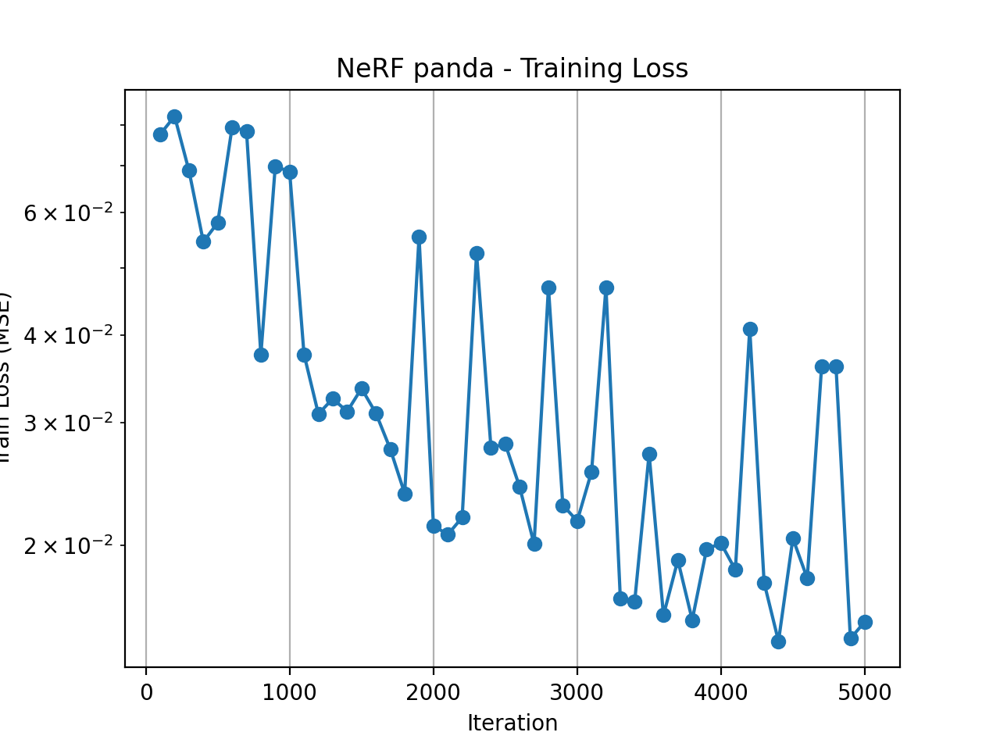
Intermediate Renders
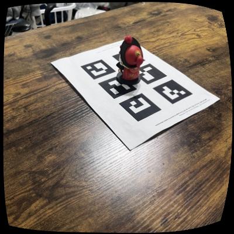

Drag the slider to browse NeRF reconstructions at different training steps.
Summary
When I first started working on this, I really thought I could achieve something close to the Lego example. Later I realized this is far more difficult than I imagined. I feel like I’ve tried almost every possible combination at every stage, yet every step turned out to be way more sensitive and error-prone than expected.
During image capture, I tested all kinds of setups:
• 6 tags as calib_images + 1 tag (same size) for object_images
• 6 tags as calib_images + 6 tags for object_images
• using the 6-tag object_images directly for calibration
• trying a single large tag for calibration
My conclusion: larger tags work much better. They’re more stable, easier to detect, and much less sensitive to lighting or background noise. Small tags get messed up by shadows, reflections, or noisy textures extremely easily.
I also hit a ton of issues while shooting photos. Later I realized the object’s distance doesn’t need to change at all; it’s the tag’s viewpoint that needs diversity, otherwise the pose solve becomes unstable. Downsampling is a must as well, because high-res noise makes detection much worse.
If possible, find a place with uniform lighting and a clean background. My desk has complicated wood grain patterns, so the detector kept hallucinating tag IDs that didn’t exist. On top of that, the desk sits between a lamp and a window, so I had to constantly avoid shadows and reflections. I basically spent the whole shooting process tiptoeing around these problems just to prevent PnP from exploding.
As for implementation details, the part that consumed the most time was visualization in Viser. My camera poses were always flipped or chaotic—sometimes all flipped in one direction (which can be fixed with a scale), sometimes half of them flipped and the other half not (which needs manual axis correction in code), and sometimes just totally inconsistent. In those cases, my final conclusion is simple: the images are the problem. Blurry shots, misdetected tags, or extreme viewing angles all lead to unstable pose estimation. That’s something I only understood after wrestling with it for days.
In the final rendering stage, I also ran into another big issue: because the captured viewpoints were too limited, NeRF didn’t have enough angular coverage. As a result, the rendered output had obvious artifacts—especially those “floating blurry layers” that look like ghost surfaces. Later I finally understood that this isn’t the model’s fault. If the training views don’t constrain the space enough, NeRF simply starts hallucinating. The less information you give it, the more it invents.
I kept trying until the last day of the deadline, but I still think the result is not good enough. I believe I will try again when I have time. If anyone sees this webpage and is willing to visit my GitHub to check my code and point out the areas I can optimize, I would be very grateful.